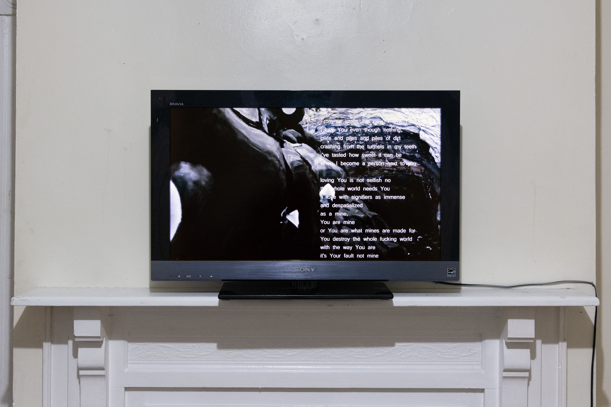
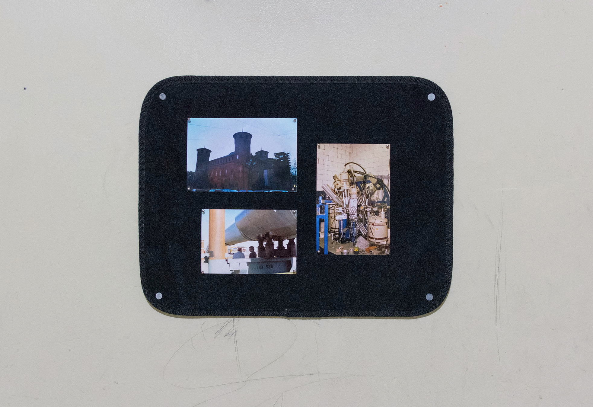
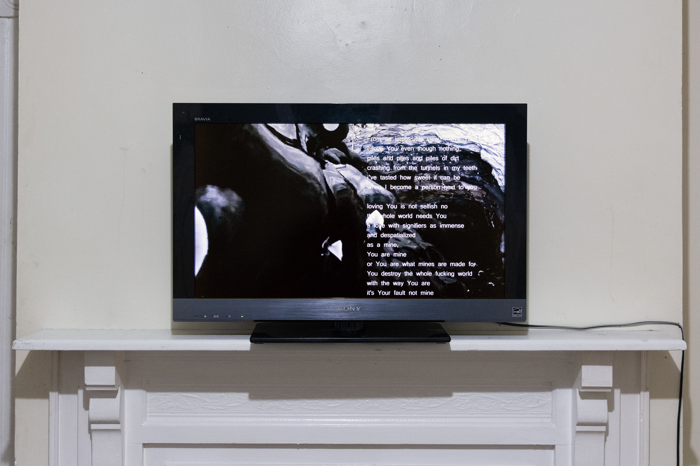
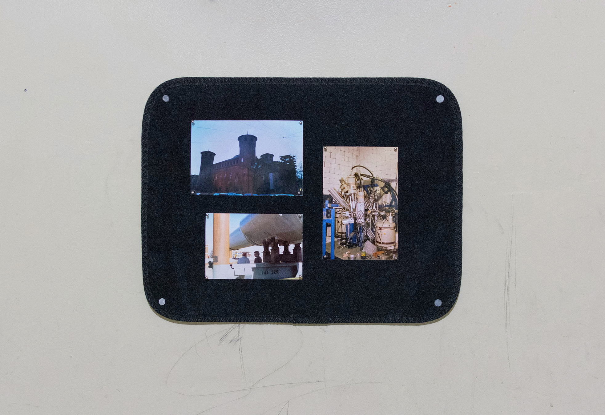

Interburden
Cielo Saucedo & Jerome Sicard
June 2023
(___) Project Space
Wilkinsburg, PA
In the subfield of surface mining, the term interburden is used to describe material situated between seams of economically valuable ore. In this exhibition by the same name, Cielo Saucedo and Jerome Sicard depart from the concept of interburden in their exploration of Western Pennsylvania’s economic shift from coal and steel to healthcare and technology. Focusing on the mythology used to legitimize this transition, the artists both expand and reveal the narratives upon which Pittsburgh’s contemporary economy relies.
Cielo Saucedo’s video, Overburden, sinks into legacies of bituminous strip mining in Pittsburgh. The work consists of fluid/frame simulation and amalgamated 3D scans of international mines using the same extractive technologies and modes of dispersal deployed in Western PA. Set in a fabulated network of abandoned drifts sitting just below the surface of Allegheny County, Saucedo maps a love story between a bucket wheel excavator, bituminous coal and computer processing systems.
Jerome Sicard’s two sculptures, CMFMFB and Hunting Blind are reproductions of structures found within a 10 mile radius of the exhibition space. In drawing together these two forms, derived from a Carnegie Mellon University construction site and a recreational hunting ground, Sicard blurs the discontinuity of Pittsburgh’s working-class identity and its contemporary, tertiary economy. Through this work, Sicard repurposes vernacular photography from the 1970s-1990s as documentation of Pittsburgh's economic transition.
 


